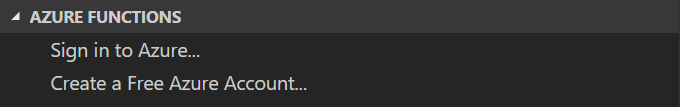
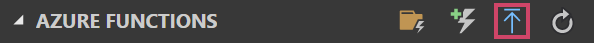
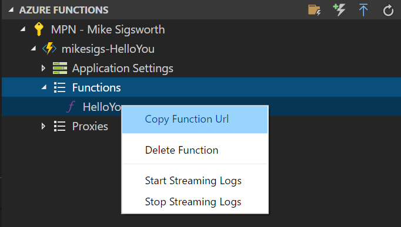

This is Step 4 in a series of posts where I will walk you through the steps required to create a simple Azure Function using F# Script, VS Code, and v1 of the Azure Functions Core Tools. I’ll cover everything from what you need to install, all the way through creating the function, and deploying it to your Azure account.
- Setup Your Environment
- Create the Function App
- Run the Function Locally
- Deploy the Function App to Azure ◀️
Sign-In to Azure Link to heading
First things first. You need an Azure account. If you don’t have one, don’t worry. The Azure Functions extension can help you create one. And it’s free, plus you’ll get $200 in free credits!
In the Azure Functions panel, click on the option that fits your needs.

Once you are signed in you should see the name of your Azure subscription listed in the Azure Functions panel.
Create a Function App in Azure Link to heading
In the VS Code sidebar, hover over the Azure Functions panel again and click the Deploy to Function App button.

VS Code will now prompt you for a few bits ton of info before deploying your function.
- Select the folder to zip and deploy: Hit [Enter] to pick the current folder
- Select a Subscription: Hit [Enter] to pick the current subscription
- Select a Function App: Create New Function App
- Enter a globally unique name: Here’s where I can’t exactly tell you what to write. You’ll have to pick something unique. Personally, I like to prefix my unique Azure resource names with “mikesigs-”, so in this case I’ll use
mikesigs-HelloYou. - Select a resource group: Create new resource group
- Enter the name of the new resource group:
HelloYou(This doesn’t have to be globally unique) - Select a storage account: Create new storage account
- Enter the name of the new storage account: This doesn’t have to be globally unique, but it has to be lowercase. I’m just gonna use
helloyou. There’s probably guidelines around naming these things somewhere. I should look it up… - Select a location: I live in Canada, so I am going to pick
Canada Centralbut you do you
And now we wait…
It could take a couple minutes to provision all this stuff.
🎵 Jeopardy music playing 🎵
You’ll see the progress of creating your resources in the Output panel. What we hope to eventually see in the end is:
>>>>>> Deployment to "mikesigs-HelloYou" completed. <<<<<<
WARNING: Some http trigger urls cannot be displayed in the output window because they
require an authentication token. Instead, you may copy them from the Azure Functions
explorer.
Notice that warning though. We’ll need a special URL to call our deployed function, one that includes a token parameter. The Azure Functions extension makes this super easy to get.
You should now be able to drill down into your Azure subscription in the Azure Functions panel and find your newly created Function App. Expand the Functions node, right-click on HelloYou, and select Copy Function Url. This will put the URL you need on the clipboard.

Test Your Deployed Function Link to heading
Head back over to Postman. Now, let’s simply replace the localhost URL with the one on your clipboard and click Send. It might take a second or two, but you should soon get the same response that you received locally.
What’s Next Link to heading
We made it! You now have an Azure Function app, deployed to Azure, that can say “Hi”.
That’s great and all, but you can do so much more!
Take some time now to create a few other functions using different triggers.
You can also try out some different bindings. Maybe try storing some data in Cosmos!
There’s so much more to learn. We’ve just scratched the surface. Please stay tuned for more walkthroughs like this in the near future.
Thanks for reading!